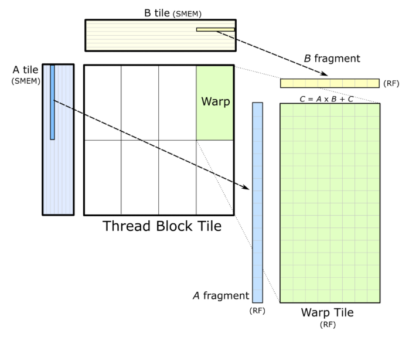
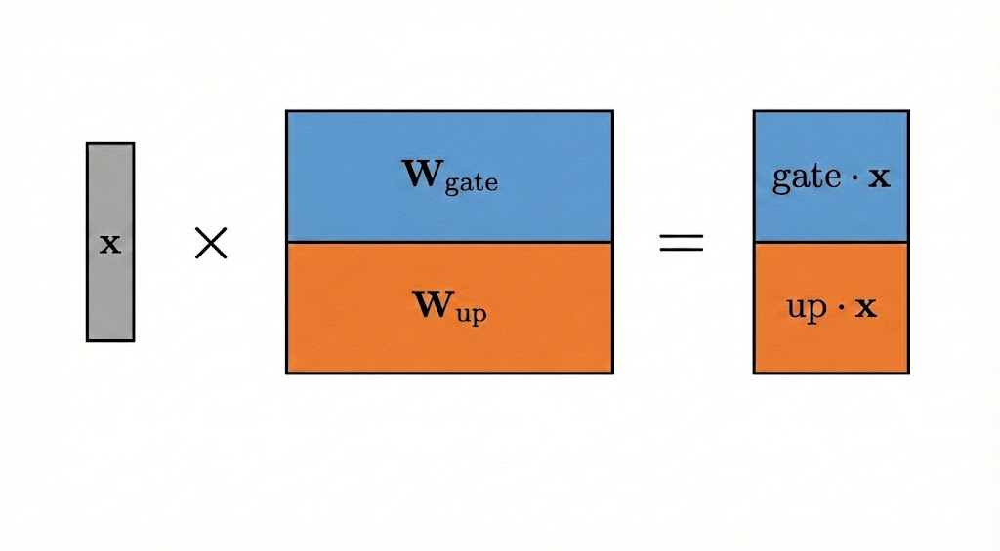
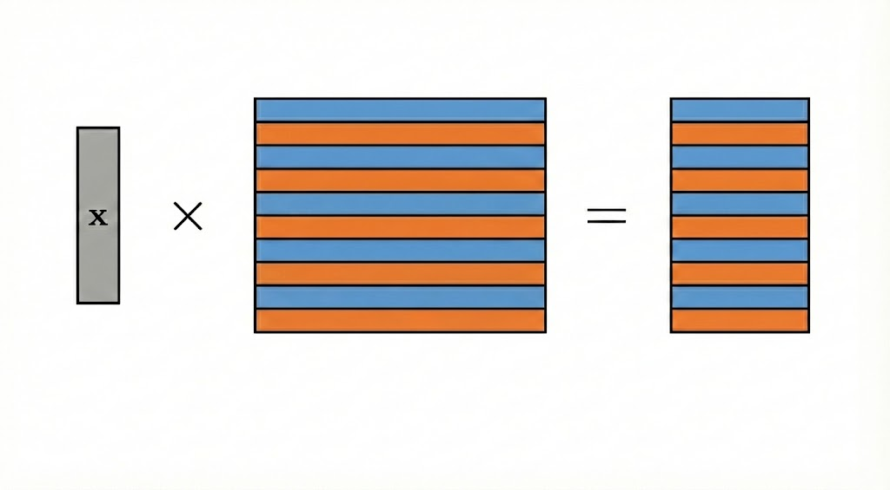
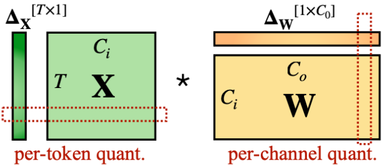
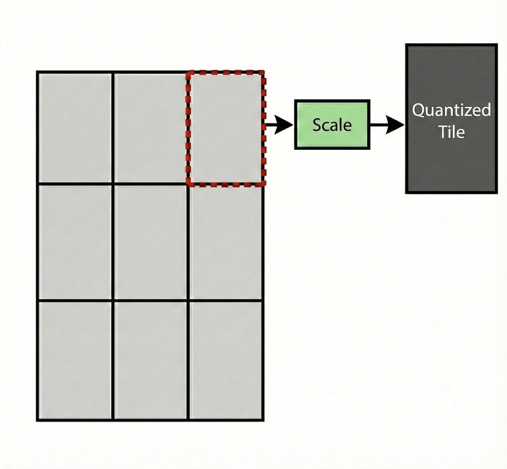

May 2026 · Part 1: The MLP Has No FlashAttention
In Part 1 we profiled vLLM's FP8 MLP hotpath on H100 and found the bottleneck is between kernels, not inside them. The gate+up GEMM writes its output to HBM. A separate kernel then reads it back, applies SiLU, multiplies gate with up, quantizes to FP8, and writes to HBM again. Two round-trips through main memory for trivial arithmetic. Our fix is to fuse that activation math into the GEMM's epilogue so the intermediate never leaves registers.
We ended up with two working approaches. A hybrid path that replaces just the activation kernel, and a fully fused path that eliminates the kernel entirely. Both deliver ~1% geomean throughput improvement on end-to-end vLLM inference across 16 workload configs:
| Path | Geomean | Best | Worst | Regressions |
|---|---|---|---|---|
| Hybrid | +1.0% | +4.7% | +0.2% | 0/16 |
| Fused | +1.0% | +3.8% | -0.4% | 2/16 |
The activation kernel, 36 launches per forward pass, ~430MB of HBM traffic per inference, effectively disappears. On a 1000-GPU serving cluster, 1% throughput is 10 GPUs worth of free capacity.
In Part 1 we identified the waste, a memory round-trip that shouldn't exist. This post is about eliminating it. We wrote the initial fused kernel by hand, built a benchmark harness that could tell us in 90 seconds whether a change helped or hurt, then handed the loop to an AI coding agent. In over 40 hours it ran 200+ compile-benchmark cycles, explored 15+ kernel variants, and produced ~125 commits. Most of the engineering was getting the idea to survive contact with the hardware.
We put it in the project report as future work. But we could not resist coming back to it.
When we did, the first thing we realized was that the idea will never work in practice, at least not as stated. The problem is in how GPUs structure matrix multiplies.
A matrix multiply is too large to compute all at once, so CUTLASS breaks it into tiles. Each thread block gets a rectangular chunk of the output, say 128 rows by 128 columns. It loads the corresponding slices of the input matrices into shared memory, multiplies them using tensor cores, and accumulates the result in registers. When the multiply is done, the epilogue runs. It takes the accumulated values still in registers and writes them to global memory. Normally, the epilogue just does type casting or scaling, but it doesn't have to be that way!
This is where we want to put SwiGLU and FP8 quantization, but the tiled structure creates two problems.

Each thread block computes one tile of the output. The epilogue runs per-tile, with only the tile's data in registers.
SwiGLU needs element-wise multiplication between gate and up outputs.
More specifically, the formula is output[i] = SiLU(gate[i]) * up[i]
The gate+up GEMM computes both projections in a single matrix multiply by stacking the weight matrices vertically. Gate weights on top, up weights on the bottom. In Qwen3-8B, the intermediate dimension is 12,288, so corresponding gate and up elements are 12,288 positions apart in the output. That's not just different registers, it's different tiles, different thread blocks, potentially different SMs. Pairing them in the epilogue would require cross-tile synchronization, which CUTLASS tiles don't do.

Gate and up land in different halves of the output. 12,288 elements apart in Qwen3-8B.
The fix is to interleave the weight matrices before inference starts. Instead of stacking gate on top of up, alternate them in blocks. Gate columns 0-63, then up columns 0-63, then gate columns 64-127, then up columns 64-127. Now every 128-column tile contains both the gate and up values it needs to compute SwiGLU. One-time cost at model load.

Interleaved weights. Gate and up outputs land next to each other in every tile.
FP8 has a tiny range, [-448, 448]. To avoid overflow, each row of activations gets scaled by 448 / max(abs(row)) before quantization. That means you need the absolute maximum across the entire row before you can quantize any element in it.

Per-token dynamic quantization. Each row needs its own scale factor, computed from the row's absolute maximum.
The epilogue runs per-tile and sees 128 columns out of 12,288. It can't compute a row-wide maximum because it doesn't have the full row. And it can't wait for other tiles to finish, because the epilogue runs independently per tile with no built-in synchronization between thread blocks.
We changed the quantization granularity. Instead of one scale per row, one scale per tile-sized block. Each 128-column tile computes its own local absmax and quantizes independently. The down projection GEMM needs to understand this block-quantized format, but vLLM's cutlass_scaled_mm already supports block-wise scales. The only constraint is the block size, which has to be 128×128 to match what vLLM accepts.

Per-tile quantization. Each tile computes its own scale. No cross-tile communication needed.
CUTLASS has a built-in system for epilogue math called the "Epilogue Visitor Tree". It handles scaling, bias, activations, anything that's shape-preserving. SwiGLU is not shape-preserving. The GEMM outputs [M, 2×D_ff] and the fused result is [M, D_ff]. EVT's visit() callback processes one accumulator fragment and returns one value. SwiGLU needs two fragments (gate and up) to produce one output. Making EVT work would mean rewriting a core CUTLASS component and fighting the API at every single step.
We wrote a custom CollectiveEpilogue from scratch. CUTLASS kernels are templated, and the epilogue just needs to implement the right method signatures (store(), load(), store_tail(), load_tail()). No base class, no inheritance. About 400 lines of CUDA.
We rented an H100 SXM on RunPod. Each iteration, from code change to benchmark results, took about two minutes. 90 seconds to compile, 30 seconds to run.
Before writing any CUDA, we wrote a design document specifying the full architecture. The CollectiveEpilogue approach, why EVT wouldn't work, the weight interleaving strategy, the accumulator indexing formula, the block quantization rationale. This was the blueprint. Everything that remained was implementing it.
We also built the benchmark infrastructure that would drive every decision from here on. The key difference from our earlier attempts in Part 1 was that we'd been working mostly in the Python layer, missing things the profiler could see but the code couldn't. This time, every benchmark ran on the actual GPU with CUDA events for timing, compared against vLLM's own compiled pipeline with CUDA graph capture, and checked correctness against a PyTorch reference implementation. We wrote the kernel, compiled it, got back an indication. Correct or incorrect, and a speedup ratio. No ambiguity.
The first few iterations were 3x to 10x slower than vLLM. The architecture was right, but the kernel had structural problems. Suboptimal scheduling, wasteful memory access patterns, unnecessary synchronization points. After enough iterations we had something about 20% slower than vLLM. Not winning, but stable enough to optimize systematically.
At that point, iteration speed became the bottleneck. Each change required editing the kernel, compiling, validating correctness, and benchmarking on real hardware. So we automated the loop. We pointed Claude Opus at the kernel source with a rotating set of prompts and let it run on the H100. Some prompts pushed it to squeeze harder on whatever was working. Some told it to try something bold. Some asked it to measure before optimizing. Every few prompts, it was asked to dump its entire state to a file, everything it knew, what worked, what failed, what to try next, and a fresh session was started from that file so the context window never filled up. Two stages. Stage 1 optimized the fused kernel in isolation, racing against vLLM's pipeline on raw GPU time. Stage 2 shifted to the full end-to-end pipeline, where it had to think about how all the kernels fit together.
It taught itself to instrument the epilogue with clock64() to find which phase was burning cycles. It learned to dump accumulator values to trace the hardware's register layout. It set gate weights to 1.0 and up weights to 2.0 so it could identify which output came from where by inspection. When it hit a wall, it logged the failure and pivoted. It never spiraled, not once in 40+ hours of kernel editing and compiling. It found the polynomial SiLU optimization (4x faster epilogue), discovered that the Triton kernel it was competing against was untuned and beat it by autotuning, and in Stage 2, when it stepped back to analyze the full pipeline, it came up with the hybrid approach entirely on its own. Over 200+ compile-benchmark cycles it produced ~125 commits.
The early kernels used a two-pass epilogue. Pass 1: compute SwiGLU values and find the per-block absmax. Pass 2: re-read the values and quantize to FP8 using the computed scale. We need the scale before you can quantize, and all the values before we can compute the scale.
It produced correct output. It was also slow. We instrumented the epilogue with clock64():
SwiGLU + absmax + quant + smem: ~5400 clk = ~2.7µs
Barrier: ~13 clk = ~0.0µs
Gmem write: ~350 clk = ~0.2µs
Total per CTA: ~5800 clk = ~2.9µsThe epilogue compute was 3µs. But the kernel was 58µs slower than it should have been. The overhead wasn't in the epilogue math. It was structural. CUTLASS's mainloop uses an async pipeline with multiple stages, and draining it means waiting for all in-flight memory operations to complete before the epilogue can start. Two passes, two pipeline drains. The 3µs of actual work was buried under 58µs of waiting. About 10% slower than vLLM overall.
After the two-pass dead end, we stepped back and looked at what vLLM was actually doing. Their GEMM uses the Pingpong schedule with FP8FastAccum, a mode where tensor core MMA accumulates FP8 products into FP32 registers while relaxing intermediate rounding, trading a bit of precision for ~10 to 15% higher throughput.
We tried copying their full configuration (Pingpong + FP8FastAccum + TiledMma 2×1×1). It failed immediately: register spills. Our epilogue was too large for Pingpong’s register budget. Instead of copying the system, we extracted the idea. We kept our Cooperative schedule (slower, but with room for a complex epilogue) and grafted FP8FastAccum onto it. That worked. From there, three optimizations followed in quick succession.
1. Single-pass epilogue. The two-pass design existed because quantization needs a scale factor, and the scale factor needs the maximum value across the block. Normally that means: compute all values first, find the max, then go back and quantize. Two passes over the data, two pipeline drains.
The insight is that the accumulator values are already in registers. We don't need to write them out and read them back. Compute SwiGLU into a float vals[32] register array, track the running absmax as we go, then reduce the absmax across the 4 threads that share each output row using warp shuffles. Once we have the scale, quantize directly from the register array. One pass, no re-reads, no pipeline drain. The compiler kept vals[32] entirely in registers, zero spills. About 11% faster than the two-pass version.
The core loop:
// For each accumulator fragment pair
for (int v = 0; v < HALF_FRAGS; v++) {
float gate = acc(v);
float up = acc(v + OFFSET);
float val = fast_silu(gate) * up;
vals[v] = val;
local_absmax = fmaxf(local_absmax, fabsf(val));
}
// Warp-shuffle absmax across 4 threads sharing each row
for (int mask = 2; mask > 0; mask >>= 1)
local_absmax = fmaxf(local_absmax,
__shfl_xor_sync(0xffffffff, local_absmax, mask));
float scale = local_absmax / 448.0f;
// Quantize and store as packed FP8x2
for (int v = 0; v < HALF_FRAGS; v += 2) {
auto packed = cvt_2xf32_to_e4m3x2(
vals[v] / scale, vals[v+1] / scale);
store_to_gmem(out_ptr + offset, packed);
}2. Polynomial SiLU. Standard SiLU(x) = x · sigmoid(x) uses the SFU (Special Function Unit, the hardware unit that computes exp, sin, rsqrt, etc.), which operates at ~16 ops/clock. FMA units (fused multiply-add units), which efficiently execute operations of the form a·b + c, run at ~128 ops/clock, up to 8× higher throughput. We replaced sigmoid with a degree-5 polynomial fitted via least-squares over [-6, 6]:
__device__ __forceinline__ float fast_silu(float x) {
float x2 = x * x;
float sig = __fmaf_rn(x2, 2.08237553e-04f, -1.02582119e-02f);
sig = __fmaf_rn(x2, sig, 2.29322027e-01f);
sig = __fmaf_rn(x, sig, 0.5f);
sig = fminf(fmaxf(sig, 0.0f), 1.0f);
return x * sig;
}Max approximation error: ~0.022 over [-6, 6]. We rejected degree-3 and 4 (6x worse mean error, 47x worse max error). The polynomial is mostly FMAs, and two clamp ops. The epilogue's dominant phase (dequant + SiLU + absmax) went from 4400 to 1115 clock cycles, 3.9x faster. Another 15% off the total kernel time.
The approximation error is within FP8 quantization noise. We measured mean absolute error after dequantization (FP8 → FP32 vs BF16 reference) on real Qwen3-8B activations. The polynomial + FP8FastAccum path reached 2.0 perplexity, compared to 2.3 for exact rsqrt + FP8FastAccum. In practice, accumulation and quantization noise dominate over the SiLU approximation error. This suggests activation function precision is not the bottleneck under FP8 training/inference regimes.
3. Paired FP8 CVT. SM90 has a native instruction cvt.rn.satfinite.e4m3x2.f32 that converts two floats to one packed FP8, in one cycle. Early versions called it with a dummy zero for the second element, wasting half the throughput. A small but free improvement.
Standalone results after all three optimizations (CUDA graph, Qwen3-8B shapes):
| Shape | Speedup vs vLLM |
|---|---|
| 4B M=256 | 1.25× |
| 8B M=256 | 1.50× |
| 4B M=1024 | 1.20× |
| 8B M=1024 | 1.12× |
REG:168 STACK:0. Zero register spills. The problem is that this uses the Cooperative schedule. We already knew from the failed Pingpong attempt that our epilogue doesn't fit in Pingpong's register budget. Time to understand why.
A CUTLASS SM90 kernel runs 3 warp groups per thread block, 128 threads each, 384 total. The GPU divides its registers equally among them. In the Cooperative schedule, all warp groups work on the same tile. They collectively load data, collectively multiply, collectively run the epilogue. Simple, but the epilogue can't start until the entire multiply is done. The tensor cores sit idle during the epilogue.
Pingpong overlaps all three. Two of the warp groups are "consumers" that alternate. While consumer A runs the epilogue for tile N, consumer B is already multiplying tile N+1. The tensor cores never idle. The third warp group is a dedicated "producer" that feeds data from global memory into shared memory via TMA (Tensor Memory Accelerator, H100's async copy engine). About 30% faster than Cooperative on the same tile size.
The cost is registers. Each thread gets a fixed budget. With __launch_bounds__(384, 1), the H100's 65,536 registers per SM give 170 registers per thread (65536 ÷ 384). That's a hard limit. If the compiler needs more than 170, the kernel can't launch. Pingpong's mainloop on a 128×128 tile compiles to 168 registers. Two registers of headroom. Any epilogue state, even a single float variable, pushes the compiler past 170 and causes register spills. Spilled values go to local memory (backed by L1/L2 cache, orders of magnitude slower than registers), and the compiler rearranges instructions around the spills, degrading the mainloop's carefully tuned scheduling.
We tried 7 times:
| Attempt | Technique | STACK | Result |
|---|---|---|---|
| 1 | Two-pass epilogue | 24 | ~20% slower |
| 2 | Single-pass + vals[32] | 16 | ~17% slower |
| 3 | vals[16] + direct gmem | 8 | ~20% slower |
| 4 | vals + smem + 1×1×1 cluster | 16 | ~10% slower |
| 5 | Zero buffering, recompute | 8 | ~25% slower |
| 6 | __noinline__ SiLU / unroll 1 | 8-544 | ~18% slower |
| 7 | Recompute + smem staging | 16 | ~10% slower |
Every single approach eventually spills. STACK:8, for example, means 8 bytes spilled to the stack per thread. Only eight bytes. Two floats. On a chip with 80GB of HBM and 256KB of register file per SM, two floats spilling to local memory, made the kernel 10-25% slower. The spill itself costs about 40 cycles per tile, almost nothing. The real damage is indirect. The compiler sees the spill and rearranges the entire mainloop's instruction schedule to work around it, breaking the carefully pipelined overlap between memory loads and tensor core math. Pingpong can't fit a non-trivial epilogue on SM90 with a 128×128 tile. Hard architectural limit.
We built a kernel that outperformed vLLM in isolation, but still couldn't break into the fast GEMM schedule that actually matters.
Each thread in a warp group owns a piece of the tile's accumulated result. These pieces are called fragments, just float values in registers. For a 64×128 tile, each of the 128 threads holds 64 fragments. Fragment 0 maps to some (row, col) in the output. Fragment 1 maps to a different (row, col). The mapping is determined by the GMMA instruction, and it's not intuitive. Adjacent fragment indices don't map to adjacent positions in the output matrix.
This matters for SwiGLU because we need to pair each gate value with its corresponding up value. If gate is in columns 0-63 and up is in columns 64-127, we need to know which fragment index holds gate[row, col] and which holds up[row, col]. Get the pairing wrong and the output is garbage.
We got a Pingpong variant with a smaller 64×128 tile to fit. REG:168 STACK:0. Integrated it into vLLM. Throughput looked good.
Qwen started speaking Chinese.
The SwiGLU pairing was incorrect. We were pairing acc[2k] with acc[2k+1] based on the CUTLASS documentation's accumulator layout formula. Wrong. We re-derived the formula from CuTe(the math language CUTLASS uses to describe how tensors are actually laid out on GPU hardware)'s layout algebra. Wrong again.
So we injected printf into the epilogue. Set gate weights to 1.0 and up weights to 2.0, so we could identify which accumulator index maps to which column by the output value. Ran it on the GPU.
Both acc[0] and acc[1] returned the gate value. The up value wasn't at acc[1]. It was at acc[32].
The Pingpong kernel's accumulator layout differs from the documented GMMA atom layout. Each thread holds 64 accumulator fragments. The actual mapping for a 64×128 tile with MMA_64x128x32:
t0 = thread_idx % 4
t1 = (thread_idx / 4) % 8
t2 = thread_idx / 32
row = t1 + 16*t2 + 8*((vid/2) % 2)
col = 2*t0 + (vid % 2) + 8*(vid / 4)Gate: vid 0-31 (cols 0-63). Up: vid 32-63 (cols 64-127). Correct pairing: acc[v] with acc[v+32].
We couldn't find this mapping documented anywhere. Not in the CUTLASS docs, not in CuTe's layout algebra, not in any blog post or paper we found. The mapping is implicit in CuTe's layout system but we couldn't derive it correctly from the documentation. The printf test harness is in the repo.
We also found two other bugs during this investigation. The cross-warp absmax reduction was reading uninitialized shared memory (each row is handled by 4 threads in the same warp, not across warps). And the weight dimension was transposed (vLLM stores FP8 weights as [K, N]). Three bugs, fixed together. Cosine similarity with the BF16 unfused reference: 0.998.
The formula derivation was wrong thrice. The printf wasn't.
The 64×128 tile gave correct output but was 2-4% slower end-to-end than baseline. Smaller tiles mean more thread blocks, more scheduling overhead, and less work per thread block to amortize the mainloop's pipeline setup.
We stepped back and asked whether we needed to touch the GEMM at all.
We ran the numbers. Pingpong is about 30% faster than Cooperative for the GEMM alone. The Triton silu+quant kernel takes less time than that 30% gap. If we keep vLLM's fast Pingpong GEMM and just write a better standalone silu+quant kernel, the total is faster than our fused Cooperative GEMM even with zero epilogue overhead.
And thus, the hybrid kernel was born: 1 block per row, 256 threads, uint4 vectorized loads for coalesced 128-bit reads, warp-shuffle absmax reduction, native FP8 CVT, polynomial SiLU. We autotuned the Triton baseline first, then beat it with CUDA. Aggregate over all silu+quant launches in a forward pass: 38% faster than Triton.
No weight interleaving. No double-quantization error. No changes to the GEMM at all.
The kernel is about 60 lines of CUDA. No novel algorithms. Just silu, multiply, quantize, written for Qwen3-8B's shapes and tuned until it's fast. vLLM and PyTorch have moved toward compiler-generated kernels. TorchInductor writes Triton that works for any model, any shape, any hardware. That's the right call for maintainability. But it means nobody is writing the fast version for your specific model. The AI agent noticed the fused kernel was converging, proposed the hybrid approach, wrote it, and had it beating vLLM in a single prompt. 38% faster than the compiler's output. There's free performance sitting in every auto-generated Triton kernel in the stack.
The hybrid path works, but it still runs the activation as a separate kernel. We wanted the full fusion. The problem was fitting our epilogue into Pingpong on a tile large enough to be fast.
The 64×128 tile we tried earlier was too small. Each warp group only got 32 rows of work, not enough to keep the tensor cores busy while waiting for memory. But we'd been splitting the tile the wrong way. CUTLASS lets you choose how warp groups divide a tile. We'd been splitting along rows (each warp group gets fewer rows). Splitting along columns instead gives each warp group a 64×256 tile, twice as wide. More columns means more work per warp group, and it means each warp group's accumulator contains both gate (cols 0-127) and up (cols 128-255). The pairing becomes acc[v] with acc[v+64].
This needs stride-128 weight interleaving (gate and up columns alternating in blocks of 128, done once at model load). And a small requant kernel to convert from block-64 FP8 scales to the per-row scales vLLM's down_proj expects.
REG:168 STACK:0. Pingpong schedule. The full fusion we set out to build, running on the fast GEMM schedule, with SwiGLU and quantization happening entirely in registers.
The silu+quant kernel is 6.2% of baseline GPU time. Our CUDA replacement is 38% faster. Amdahl's Law caps the end-to-end gain at 1 / (1 - 0.062 + 0.062/1.38) ≈ 1.017×, or about 1.7%. We measured 1-5% depending on workload. The higher end likely reflects secondary effects: reduced memory pressure, better L2 behavior.
We ran Qwen3-8B FP8, H100 SXM, vLLM v0.18.0, max_model_len=32768. We injected our kernels directly into vLLM's MLP forward path and used vLLM's own LLM.generate() for end-to-end measurement. 2000 prompts per config, each config taking 10+ minutes to run (even longer for the bigger ones). 1% over a 10-minute run is 6+ seconds, on a workload where the GPU executes the MLP hundreds of times per second.
The measured 1-5% exceeds the 1.7% Amdahl ceiling from Part 1. The difference: on prefill-heavy configs the MLP is a bigger fraction of total compute, and eliminating the HBM round-trip has secondary effects (reduced memory bus contention, better L2 cache behavior for surrounding kernels). Gains shrink at long context where attention dominates.
The hybrid path has zero regressions across all configs. For production, that's the stronger result.
Full breakdown by config:
| Path | Geomean | Best | Worst | Regressions |
|---|---|---|---|---|
| Hybrid | +1.0% | +4.7% | +0.2% | 0/16 |
| Fused | +1.0% | +3.8% | -0.4% | 2/16 |
The activation kernel, 36 launches per forward pass, ~430MB of HBM traffic per inference, effectively disappears. On a 1000-GPU serving cluster, 1% throughput is 10 GPUs worth of free capacity.
| Config | Baseline | Hybrid | Fused | Hybrid × | Fused × |
|---|---|---|---|---|---|
| in=128 out=1024 | 18750/s | 18955/s | 19058/s | 1.011× | 1.016× |
| in=512 out=64 | 188882/s | 197736/s | 196087/s | 1.047× | 1.038× |
| in=512 out=512 | 39999/s | 40635/s | 40311/s | 1.016× | 1.008× |
| in=1024 out=1024 | 26420/s | 26610/s | 26662/s | 1.007× | 1.009× |
| in=2048 out=512 | 61506/s | 61938/s | 61818/s | 1.007× | 1.005× |
| in=2048 out=2048 | 15585/s | 15746/s | 15875/s | 1.010× | 1.019× |
| in=4096 out=512 | 72255/s | 72479/s | 72423/s | 1.003× | 1.002× |
| in=4096 out=1024 | 35077/s | 35383/s | 35602/s | 1.009× | 1.015× |
| in=8192 out=512 | 80203/s | 80382/s | 80534/s | 1.002× | 1.004× |
| in=8192 out=1024 | 38923/s | 39188/s | 39408/s | 1.007× | 1.012× |
| in=16384 out=512 | 86253/s | 86410/s | 86679/s | 1.002× | 1.005× |
| in=16384 out=1024 | 41936/s | 42017/s | 42092/s | 1.002× | 1.004× |
Heavy decode:
| Config | Baseline | Hybrid | Fused | Hybrid × | Fused × |
|---|---|---|---|---|---|
| in=1024 out=1024 | 26390/s | 26592/s | 26678/s | 1.008× | 1.011× |
| in=2048 out=2048 | 15602/s | 15727/s | 15865/s | 1.008× | 1.017× |
| in=1024 out=4096 | 7635/s | 7712/s | 7629/s | 1.010× | 0.999× |
| in=2048 out=8192 | 4118/s | 4152/s | 4101/s | 1.008× | 0.996× |
On H100, the fused path requires a small requant kernel to convert block-quantized FP8 scales to the per-row format vLLM's downstream GEMM expects. It's still much faster than the silu+quant kernel it replaces, since it only moves FP8 data (half the bytes) and does no compute. On Blackwell (B200/SM100), this limitation disappears entirely. Native per-block dequantization in the GEMM mainloop means the next kernel can consume block-quantized FP8 directly from the epilogue. No requant kernel, and FP8 stays on-chip end to end, cutting HBM traffic even further. On Blackwell, the fused path becomes strictly better than hybrid, no requant kernel, no regressions, no reason not to use it.
And the SwiGLU fusion is just one of four opportunities. Three other GEMMs in the transformer have the same pattern: RMSNorm+quant after down_proj, RoPE+quant after QKV, and the attention output projection. Each has post-processing that currently runs as a separate kernel. All three have simpler post-ops than SwiGLU, none require pairing accumulator registers across a GMMA tile.
200+ benchmark runs, 15+ different kernel variants, ~125 commits, over 64 hours of GPU time.
We fused one GEMM epilogue.
Three more remain.